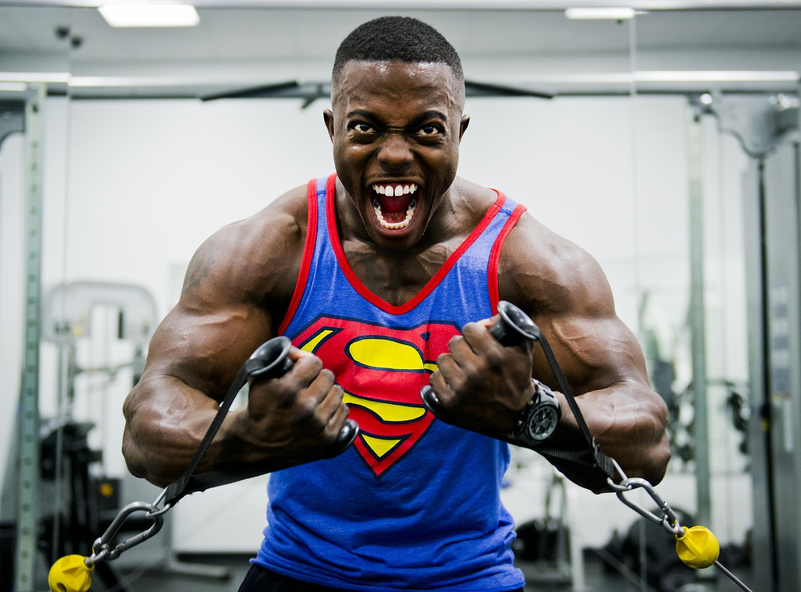

Träningsschema
Ett ganska vanligt schema med mycket inspiration av Candito's 6-week-strength-program. Mycket fokus på bas- och flerledsövningar. Volymen jag har satt ut är exempel på hur det kan se ut, jag och mängder med tränare rekommenderar att man växlar volymen vecka till vecka!
Överkroppspass 1
- Bänkpress 5 x 5
- Chins/Latsdrag 4 x 6-12
- Militärpress 4 x 6-8
- Skivstångsrodd 4 x 8-12
- Tillägsövning: Baksida axlar (OBS, frivilligt)
- Tillägsövning: Bicepscurls (OBS, frivilligt)
Underkroppspass 1
- Knäböj 5 x 5
- Raka marklyft 4 x 6-12
- Utfallssteg med skivstång 3 x 8-10
- Hipthrusters 3 x 8-10
Överkroppspass 2
- Bänkpress 5 x 5
- Chins/Latsdrag 4 x 6-12
- Militärpress 4 x 6-8
- Skivstångsrodd 4 x 8-12
- Tillägsövning: Dips (OBS, frivilligt)
- Tillägsövning: Valfri tricepsövning
Underkroppspass 2
- Knäböj
- Marklyft
- Hängande benlyft
- Sittande cablecrushers